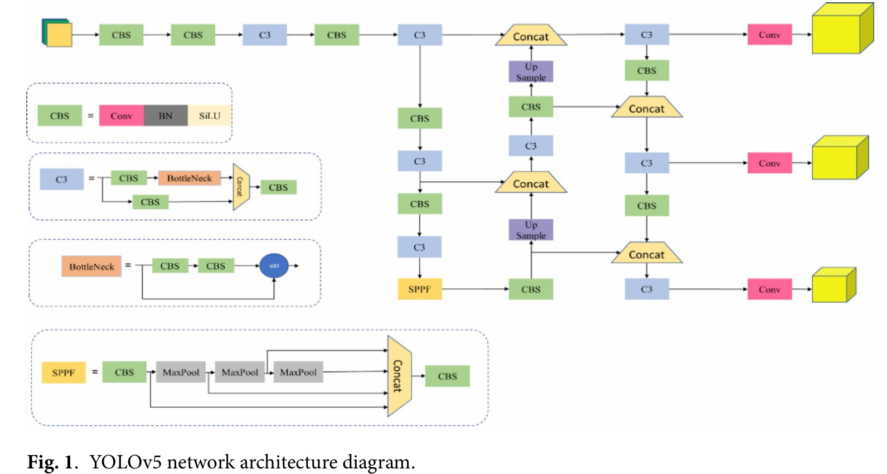
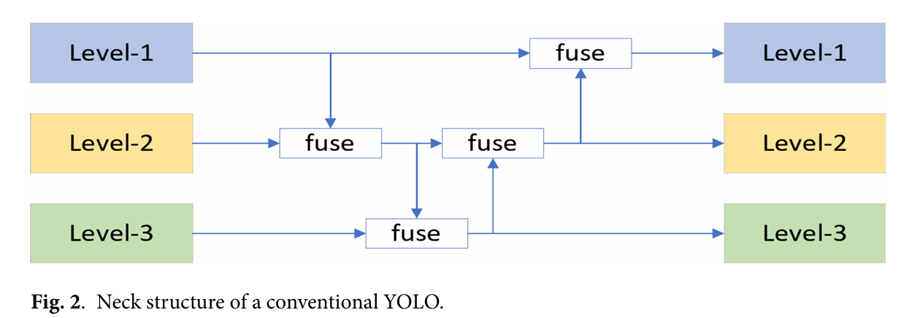
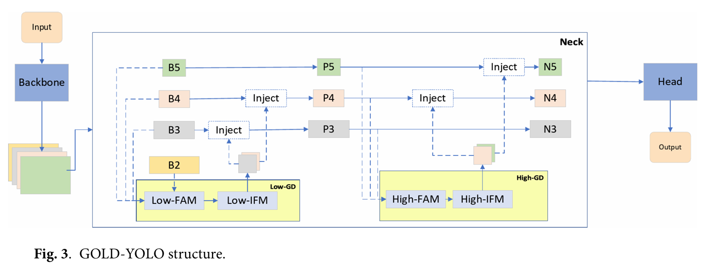
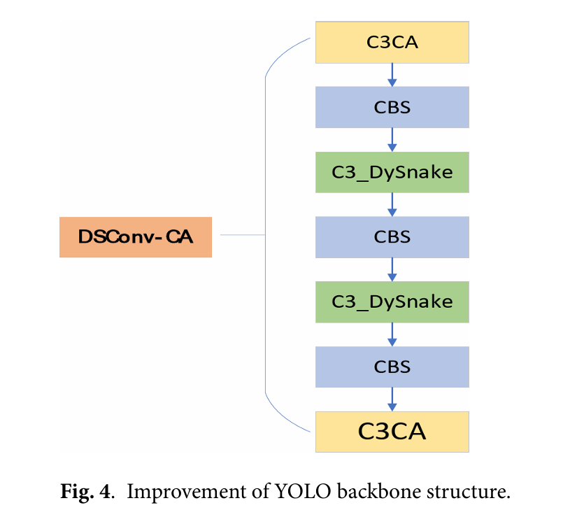
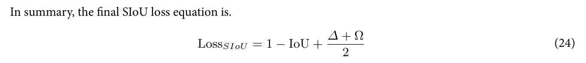

How it works


Neck structure improvement
1. Neck structure
Goal of Neck structure is to transfer and share features that is extracted in backbone step accross different layers in order to make it recognize all big and small features.
FPN(yolo v5 nano's neck layer) has leakage of information during transfer of datas.

2. GOLD YOLO
-> Original YOLO v5 nano's neck structure is called FPN. FPN has a problem. During the transfer of information accross layers process, information loss happens.
Therefore, it is important to solve this problem. This is called GOLD-YOLO. Gold yolo globally fuses multi-layer features and globally injects information into higher layers.
-> Structure : Gold YOLO consists of 3 main modules, FAM(Feature Alignment Module), IFM(Information Fashion Module), IJM(Information Injection Module)
- FAM aligns features from each level.
- IFM fuses the aligned features to generate global information. It fuse(integrate) aligned features and make unified global featrues and distribute fused results to diffent levels.
- IJM distributes it to each level, using two branches Low GD, High GD.
Backbone improvement

1. C3CA (CA module)
C3CA is an attention mechanism module. Attention module helps model focus on specific area that is expected for an object to exist.
using C3CA has follwing adventages.
a. capture cross channel infromation and direction-aware , position aware information
b. it has very small neumber of parameters that can be flexibly embedded into the network.
c. it has good scalability.
Therefore it is cross channel, direction and position awareable, and it is small so good for small models.
To sum up, C3CA module helps the model focus on important feature channels, thereby improve detection performance. C3CA does not significantly increase computational overhead, making it capable of improving model performance while maintaining computational efficiency.
2. Dynamic Snake Convolution
Kernel: it is a pattern measurement tool.
Convolution: when it adapts kernel on an image, it does convolution as calcultion.Convolution is a calcultaion that finds edge of an object using kernel on an image.
YOLO can not detect steel surface defects with complex shapes. therefore we use active contour model. Kernel sample is same. What is different is that it decides where to adapt the kernel. It decides the next location to adapt kernel. In conclusion the model adapts covolution on the area following edge of objects. This makes the model easily detect the objects' edge in a short time because it doesn't have to adapt the kernel on all areas of the image.
Loss function improvement(SIOU loss function)
Loss function is a function that calculates the difference between real value and estimated value.
YOLO v5 adapts CIOU as a loss function. However this loss function has higher computational complexity and limited effect on small target detection. Therefore it has slow regression speed.
SIOU loss function takes into account 4 things.
a. angle loss: It calculates the difference in angle between real box and estimated box.
b. distance loss: It calculates the differece int distance between minimum outer rectangle of true frame and predicted frame.
c. Shape loss: It calculates the shpae difference.
d. IOU loss: It calculates the difference in intersection and concurrency ratio(겹친 면적)

The final SIOU loss function is calculated as above. Delta means angular loss and distance loss, Omega means shape loss.
My understanding
YOLO can be used everywhere. In cctv, autonomous vehicle etc. We realized the fact that YOLO has limitations. and We can improve this limitations by adding and changing blocks.
Future development
I am planning to improve my understanding about YOLO.